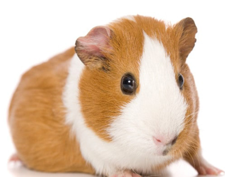
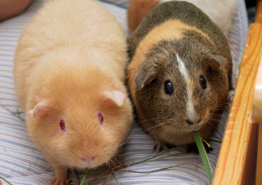

ლუნკარია (ლუნკარის) პურსუსული ზღვის გოჭი (ლათ. Cavia porcellus), გვინეური ზღვის გოჭი, ძუძუმწოვარი ცხოველი მღრღნელების რიგისა. მისი უკუდო სხეული 35 სმ აღწევს. უკანა თათზე 3 თითი აქვს, წინაზე - 4, ზურგი - მოყავისფრო-რუხია. ცხოვრობს პერუს მთისწინების ღია ადგილებში. ბინადრობს სოროებში პატარ-პატარა ჯგუფებად. წელიწადში 2-ჯერ შობს 1-4 ნაშიერს. ზღვის გოჭი (ან მისი ახლობელი სახეობა) სახორცედ მოაშინაურეს ინკებმა. ევროპაში შემოყვანილია XVI საუკუნეში. ზღვის გოჭს იყენებენ ბიოლოგიასა და მედიცინაში ფიზიოლოგიური, იმუნოლოგიური და სხვა ცდებისათვის. ტყვეობაში მრავლდება მთელი წლის განმავლობაში და შობს 6 ნაშიერს. ცუდად იტანს ტემპერატურის მკვეთრ ცვლილებას.
ლუნკარია პურსუსული ზღვის გოჭი შესანიშნავი არჩევანია მათთვის, ვინც ეძებს ფუმფულა და უნიკალური გარეგნობის შინაურ ცხოველს, თუმცა მათ განსაკუთრებული ყურადღება სჭირდებათ თმის მოვლაში.
 